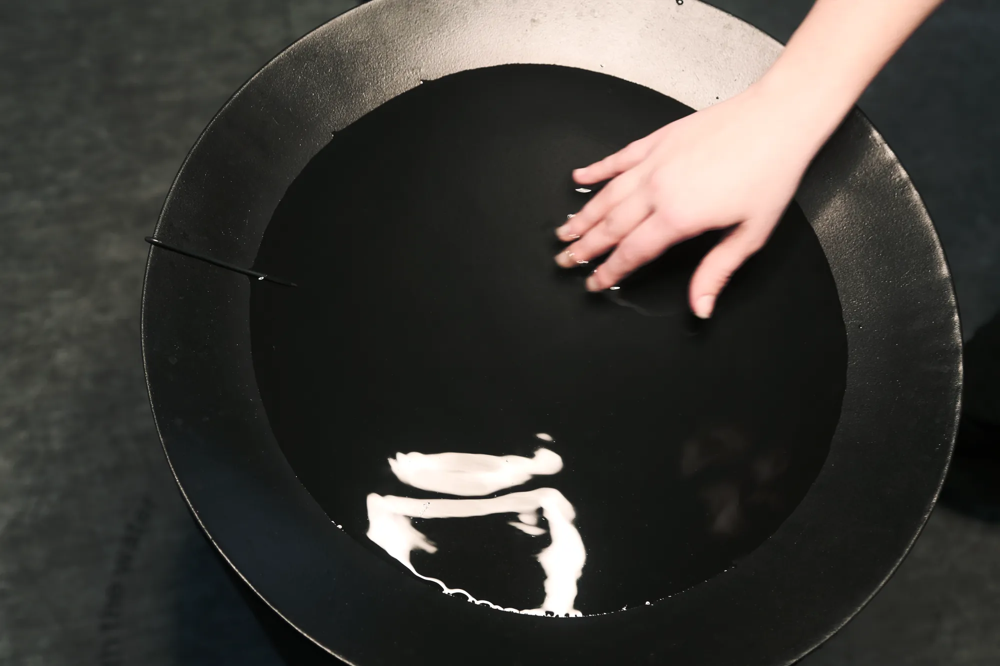
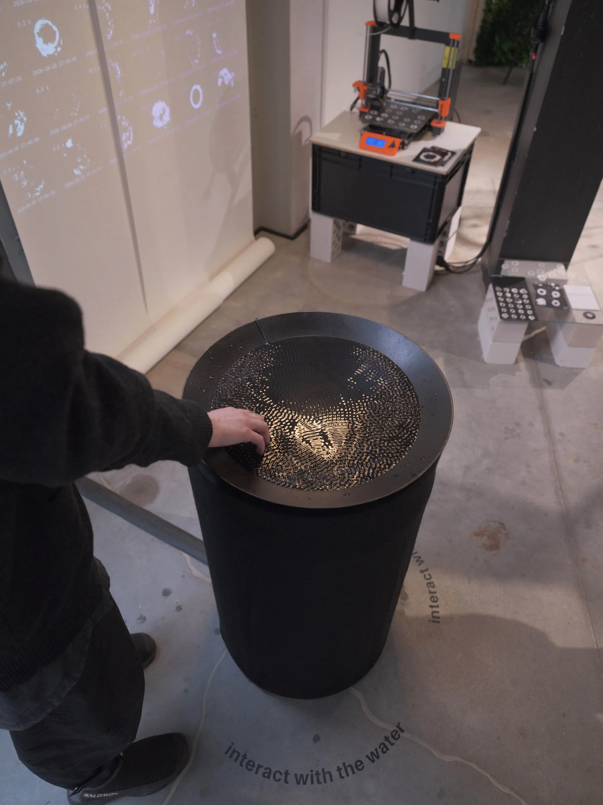
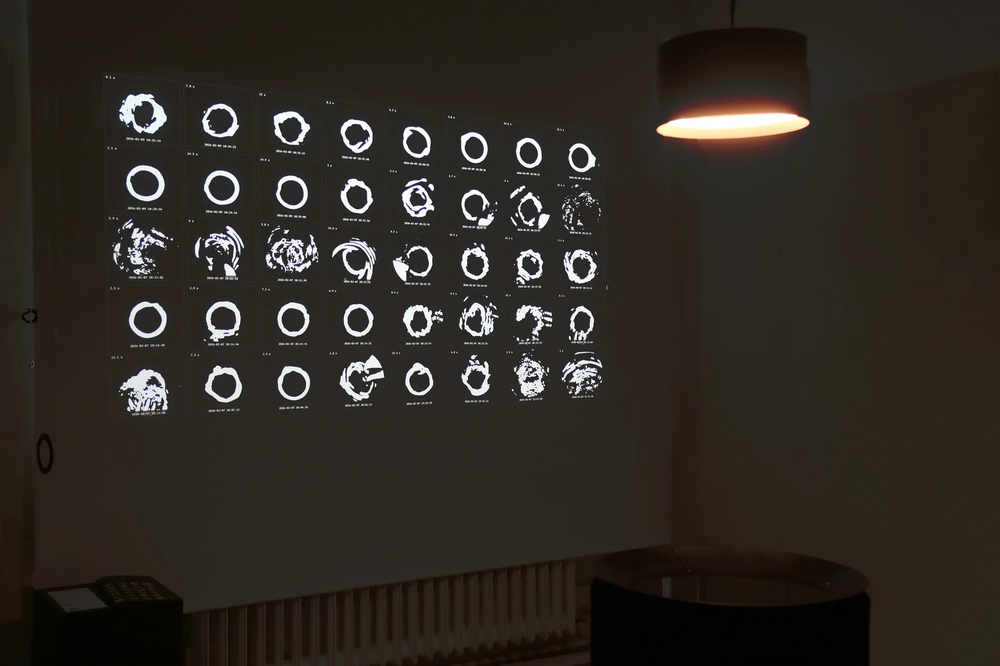
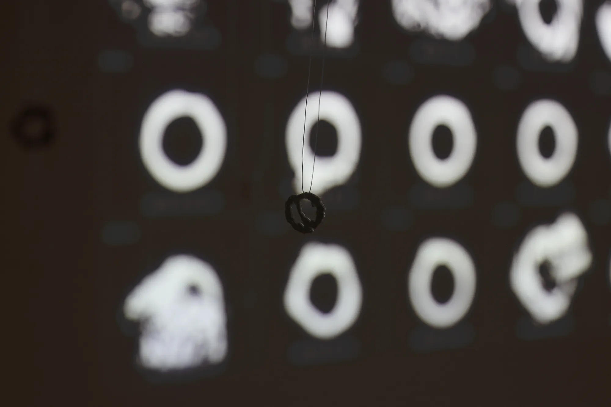

equal matter
An interactive installation in which human, machine and material take part as equals.
- Year
- 2025 – 2026
- Context
- Future of Making, M.A. Design & Future Making, Pforzheim University
- Team
- with Katharina Wittemann
- Role
- concept, code, setup and physical computing, documentation and paper (50/50)
- Tools
- capacitive sensing, Raspberry Pi Pico 2 W, Python, speaker, webcam, 3D printing

01 / Question
How can human, machine and material collaborate as equals, so that none of the three takes a superior role? equal matter explores this question as an interactive installation built around a bowl of water.

02 / Interaction
Visitors touch the water. A capacitive sensor reads the gesture and translates it into continuously changing sound frequencies. The water starts to vibrate, and shifting wave patterns appear on its surface. They distort the reflection of a ring light, which a camera captures in real time. From these fleeting configurations the system generates images and 3D models: the reflections become shapes that are printed and turned into silver-plated rings, material traces of a moment in which human gesture, machine behavior and material response meet.


03 / Material
Building it meant listening to the water. We tested frequencies systematically and found that between roughly 48 and 80 Hz the water answers in patterns that are readable and distinct from each other, so the material itself helps decide the range of the interaction. A gallery next to the installation shows every captured moment as it happens.


04 / Exhibitions & links
Exhibitions & presentations
- Werkschau Pforzheim, February 2026 (A.K.T; exhibition space)
- Milan Design Week, April 2026
- Dutch Design Week, 17 – 25 October 2026